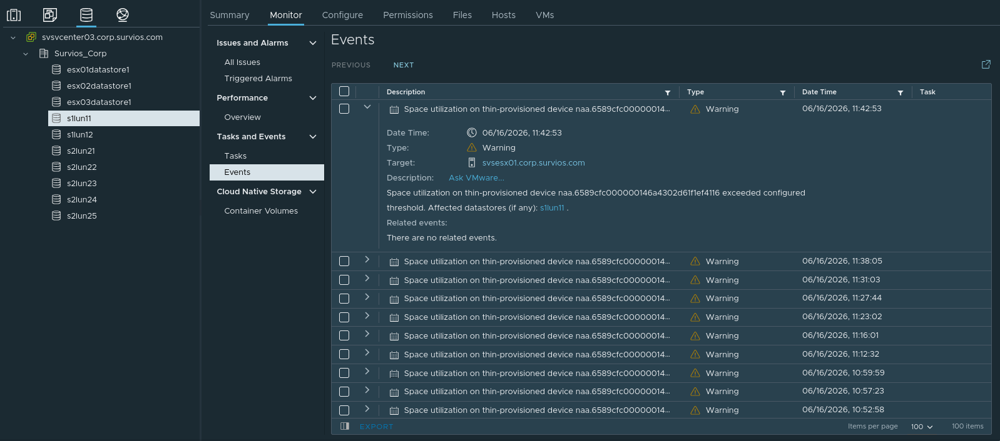

Posted on June 18, 2026
, Extents and the edit menu for s1t01e01 open. There is a green circle around the unchecked box for Enable TPC with a blue save button at the bottom, all other settings are at their defaults.")

(bash) zpool events -v
Jun 14 2026 00:00:01.096587179 sysevent.fs.zfs.scrub_start
version = 0x0
class = "sysevent.fs.zfs.scrub_start"
pool = "s1z6p01"
pool_guid = 0x5090c805d7da8c67
pool_state = 0x0
pool_context = 0x0
time = 0x6a2e5171 0x5c1cdab
eid = 0xba
Jun 14 2026 00:00:01.096587179 sysevent.fs.zfs.history_event
version = 0x0
class = "sysevent.fs.zfs.history_event"
pool = "s1z6p01"
pool_guid = 0x5090c805d7da8c67
pool_state = 0x0
pool_context = 0x0
history_hostname = "san01.corp.combobulate.test"
history_internal_str = "func=1 mintxg=0 maxtxg=2462043"
history_txg = 0x2591b
history_time = 0x6a2e5171
time = 0x6a2efd61 0x2e67c749
eid = 0xbc
Jun 14 2026 00:00:01.096587179 sysevent.fs.zfs.scrub_finish
version = 0x0
class = "sysevent.fs.zfs.scrub_finish"
pool = "s1z6p01"
pool_guid = 0x5090c805d7da8c67
pool_state = 0x0
pool_context = 0x0
time = 0x6a2efd61 0x2e67c749
eid = 0xbd
(bash) cat /etc/ctl.conf
portal-group "default" {
}
portal-group "pg1" {
tag "0x0001"
discovery-filter "portal-name"
discovery-auth-group "no-authentication"
listen "10.10.250.10:3260"
listen "10.10.251.10:3260"
listen "10.10.252.10:3260"
listen "10.10.253.10:3260"
option "ha_shared" "on"
}
lun "s1t01e01" {
ctl-lun "0"
path "/dev/zvol/s1z6p01/s1p01z01"
blocksize "512"
serial "0cc47aeb7052000"
device-id "iSCSI Disk 0cc47aeb7052000 "
option "vendor" "TrueNAS"
option "product" "iSCSI Disk"
option "revision" "0123"
option "naa" "0x6589cfc000000146a4302d61f1ef4116"
option "insecure_tpc" "on"
option "avail-threshold" "51054276273766"
option "rpm" "7200"
}
lun "s1t02e02" {
ctl-lun "1"
path "/dev/zvol/s1z6p02/s1p02z02"
blocksize "512"
serial "0cc47aeb7052001"
device-id "iSCSI Disk 0cc47aeb7052001 "
option "vendor" "TrueNAS"
option "product" "iSCSI Disk"
option "revision" "0123"
option "naa" "0x6589cfc0000004890eda588bdf208b7"
option "insecure_tpc" "on"
option "avail-threshold" "51054276273769"
option "rpm" "5400"
}
auth-group "ag4tg1_1" {
initiator-name "iqn.1998-01.com.vmware:esx01.corp.combobulate.test:558930432:64"
initiator-name "iqn.1998-01.com.vmware:esx02.corp.combobulate.test:134567035:64"
initiator-name "iqn.1998-01.com.vmware:esx03.corp.combobulate.test:1859839222:64"
initiator-portal "10.10.250.0/24"
initiator-portal "10.10.251.0/24"
initiator-portal "10.10.252.0/24"
initiator-portal "10.10.253.0/24"
auth-type "none"
}
target "iqn.2005-101.org.freenas.ctl:s1t01" {
alias "s1t01"
portal-group "pg1" "ag4tg1_1"
lun "11" "s1t01e01"
}
auth-group "ag4tg2_2" {
initiator-name "iqn.1998-01.com.vmware:esx01.corp.combobulate.test:558930432:64"
initiator-name "iqn.1998-01.com.vmware:esx02.corp.combobulate.test:134567035:64"
initiator-name "iqn.1998-01.com.vmware:esx03.corp.combobulate.test:1859839222:64"
initiator-portal "10.10.250.0/24"
initiator-portal "10.10.251.0/24"
initiator-portal "10.10.252.0/24"
initiator-portal "10.10.253.0/24"
auth-type "none"
}
target "iqn.2005-101.org.freenas.ctl:s1t02" {
alias "s1t02"
portal-group "pg1" "ag4tg2_2"
lun "12" "s1t02e02"
}
(bash) ctladm readcap 0
(7:0:0/0): READ CAPACITY(10). CDB: 25 00 00 00 00 00 00 00 00 00 Tag: 0/1
(7:0:0/0): CTL Status: SCSI Error
(7:0:0/0): SCSI Status: Check Condition
(7:0:0/0): SCSI sense: UNIT ATTENTION asc:29,1 (Power on occurred)
(bash) ctladm readcap 0
Disk Capacity: 124644229183, Blocksize: 512
(bash) ctladm readcap 0
Disk Capacity: 124644229183, Blocksize: 512
(bash) ctladm readcap 0
(7:0:0/0): READ CAPACITY(10). CDB: 25 00 00 00 00 00 00 00 00 00 Tag: 0x1b/1
(7:0:0/0): CTL Status: SCSI Error
(7:0:0/0): SCSI Status: Check Condition
(7:0:0/0): SCSI sense: UNIT ATTENTION asc:38,7 (Thin provisioning soft threshold reached)
(7:0:0/0): Info: 0x20
(bash) ctladm reqsense 0
(7:0:0/0): REQUEST SENSE. CDB: 03 00 00 00 fc 00
(7:0:0/0): SCSI sense: UNIT ATTENTION asc:38,7 (Thin provisioning soft threshold reached)
(7:0:0/0): Info: 0x20
(bash) zpool status
pool: boot-pool
state: ONLINE
scan: scrub repaired 0B in 00:00:10 with 0 errors on Sat Jun 13 03:45:10 2026
config:
NAME State READ WRITE CKSUM
boot-pool ONLINE 0 0 0
mirror-0 ONLINE 0 0 0
ada0p2 ONLINE 0 0 0
ada1p2 ONLINE 0 0 0
errors: No known data errors
pool: s1z6p01
state: ONLINE
scan: scrub repaired 0B in 12:13:36 with 0 errors on Sun Jun 14 12:13:37 2026
config:
Name STATE READ WRITE CKSUM
s1z6p01 ONLINE 0 0 0
raidz2-0 ONLINE 0 0 0
gptid/b2406590-f559-11f0-bec0-0cc47aeb7052 ONLINE 0 0 0
gptid/b2490256-f559-11f0-bec0-0cc47aeb7052 ONLINE 0 0 0
gptid/b2715c55-f559-11f0-bec0-0cc47aeb7052 ONLINE 0 0 0
gptid/b283d2e4-f559-11f0-bec0-0cc47aeb7052 ONLINE 0 0 0
gptid/b279a9d1-f559-11f0-bec0-0cc47aeb7052 ONLINE 0 0 0
gptid/b28c2237-f559-11f0-bec0-0cc47aeb7052 ONLINE 0 0 0
errors: No known data errors
pool: s1z6p02
state: ONLINE
scan: scrub repaired 0B in 00:00:25 with 0 errors on Sun May 24 00:00:26 2026
config:
Name STATE READ WRITE CKSUM
s1z6p02 ONLINE 0 0 0
raidz2-0 ONLINE 0 0 0
gptid/7f3eb7e0-f559-11f0-bec0-0cc47aeb7052 ONLINE 0 0 0
gptid/7f30d49e-f559-11f0-bec0-0cc47aeb7052 ONLINE 0 0 0
gptid/7f4c33d1-f559-11f0-bec0-0cc47aeb7052 ONLINE 0 0 0
gptid/8058d271-f559-11f0-bec0-0cc47aeb7052 ONLINE 0 0 0
gptid/80c91777-f559-11f0-bec0-0cc47aeb7052 ONLINE 0 0 0
gptid/80e341ca-f559-11f0-bec0-0cc47aeb7052 ONLINE 0 0 0
errors: No known data errors
(bash) glabel status
Name Status Components
gptid/fa1a273d-bce8-11ec-8711-a0369f53074c N/A ada0p1
gptid/fa2ab6a5-bce8-11ec-8711-a0369f53074c N/A ada1p1
gptid/b2490256-f559-11f0-bec0-0cc47aeb7052 N/A da0p2
gptid/b279a9d1-f559-11f0-bec0-0cc47aeb7052 N/A da1p2
gptid/b2406590-f559-11f0-bec0-0cc47aeb7052 N/A da2p2
gptid/b28c2237-f559-11f0-bec0-0cc47aeb7052 N/A da3p2
gptid/b2715c55-f559-11f0-bec0-0cc47aeb7052 N/A da4p2
gptid/b283d2e4-f559-11f0-bec0-0cc47aeb7052 N/A da5p2
gptid/7f30d49e-11f1-11f0-92da-0cc47aeb7052 N/A da10p2
gptid/7f3eb7e0-11f1-11f0-92da-0cc47aeb7052 N/A da6p2
gptid/7f4c33d1-11f1-11f0-92da-0cc47aeb7052 N/A da7p2
gptid/8058d271-11f1-11f0-92da-0cc47aeb7052 N/A da11p2
gptid/80c91777-11f1-11f0-92da-0cc47aeb7052 N/A da9p2
gptid/80e341ca-11f1-11f0-92da-0cc47aeb7052 N/A da8p2
gptid/fa30ff2f-bce8-11ec-8711-a0369f53074c N/A ada1p3
gptid/fa1f48f0-bce8-11ec-8711-a0369f53074c N/A ada0p3
(bash) geom disk list
Geom name: da0
Providers:
1. Name: da0
Mediasize 20000588955648 (18T)
Sectorsize: 512
Stripesize: 4096
Stripeoffset: 0
Mode: r2w2e5
descr: SEAGATE ST20000NM002D
lunid: 5000c500d86c370f
ident: ZVT09NRT0000C21888MF
rotationrate: 7200
fwsectors: 63
fwheads: 255
Geom name: da1
Providers:
1. Name: da1
Mediasize 20000588955648 (18T)
Sectorsize: 512
Stripesize: 4096
Stripeoffset: 0
Mode: r2w2e5
descr: SEAGATE ST20000NM002D
lunid: 5000c500d8702dcf
ident: ZVT09SH50000C22081JZ
rotationrate: 7200
fwsectors: 63
fwheads: 255
Geom name: da2
Providers:
1. Name: da2
Mediasize 20000588955648 (18T)
Sectorsize: 512
Stripesize: 4096
Stripeoffset: 0
Mode: r2w2e5
descr: SEAGATE ST20000NM002D
lunid: 5000c500d87019ab
ident: ZVT09S260000C22080R1
rotationrate: 7200
fwsectors: 63
fwheads: 255
Geom name: da3
Providers:
1. Name: da3
Mediasize 20000588955648 (18T)
Sectorsize: 512
Stripesize: 4096
Stripeoffset: 0
Mode: r2w2e5
descr: SEAGATE ST20000NM002D
lunid: 5000c500d8b756fb
ident: ZVT0GZAC0000W217ULHY
rotationrate: 7200
fwsectors: 63
fwheads: 255
Geom name: da4
Providers:
1. Name: da4
Mediasize 20000588955648 (18T)
Sectorsize: 512
Stripesize: 4096
Stripeoffset: 0
Mode: r2w2e5
descr: SEAGATE ST20000NM002D
lunid: 5000c500d871b6c3
ident: ZVT09XSY0000W216SPCA
rotationrate: 7200
fwsectors: 63
fwheads: 255
Geom name: da5
Providers:
1. Name: da5
Mediasize 20000588955648 (18T)
Sectorsize: 512
Stripesize: 4096
Stripeoffset: 0
Mode: r2w2e5
descr: SEAGATE ST20000NM002D
lunid: 5000c500d85d8eb7
ident: ZVT08KTY0000C216E70J
rotationrate: 7200
fwsectors: 63
fwheads: 255
(bash) zpool list s1z6p01
NAME SIZE ALLOC FREE CKPOINT EXPANDSZ FRAG CAP DEDUP HEALTH ALTROOT
s1z6p01 109T 43.2T 65.9T - - 0% 39% 1.00x ONLINE /mnt
18 * 6 = 108 Not exact, but if we broke it down into bits and or bytes, then they would match up. We need to remember, that we don't have access to all of that 108T, we have RAID overhead, and ZFS has a habit of requiring 20% of free space overhead as well.
(bash) zfs list -t volume
NAME USED AVAIL REFER MOUNTPOINT
s1z6p01/s1p01z01 58.5T 43.8T 28.8T -
s1z6p02/s1p02z02 58.5T 72.6T 656M -
28.8 * 1.5 = 43.2 which matches up exactly.
(bash) zfs get all s1z6p01
NAME PROPERTY VALUE SOURCE
s1z6p01 type filesystem -
s1z6p01 creation Mon Jan 19 9:10 2026 -
s1z6p01 used 58.5T -
s1z6p01 available 14.1T -
s1z6p01 referenced 192K -
s1z6p01 compressratio 1.03x -
s1z6p01 mounted yes -
s1z6p01 quota none -
s1z6p01 reservation none default
s1z6p01 recordsize 128K default
s1z6p01 mountpoint /mnt/s1z6p01 default
s1z6p01 sharenfs off default
s1z6p01 checksum on default
s1z6p01 compression lz4 local
s1z6p01 atime on default
s1z6p01 devices on default
s1z6p01 exec on default
s1z6p01 setuid on default
s1z6p01 readonly off default
s1z6p01 jailed off default
s1z6p01 snapdir hidden default
s1z6p01 aclmode passthrough local
s1z6p01 aclinherit passthrough local
s1z6p01 createtxg 1 -
s1z6p01 canmount on default
s1z6p01 xattr on default
s1z6p01 copies 1 default
s1z6p01 version 5 -
s1z6p01 utf8only off -
s1z6p01 normalization none -
s1z6p01 casesensitivity sensitive -
s1z6p01 vscan off default
s1z6p01 nbmand off default
s1z6p01 sharesmb off default
s1z6p01 refquota none default
s1z6p01 refreservation none default
s1z6p01 guid 15912384754104254868 -
s1z6p01 primarycache all default
s1z6p01 secondarycache all default
s1z6p01 usedbysnapshots 0B -
s1z6p01 usedbydataset 192K -
s1z6p01 usedbychildren 58.5T -
s1z6p01 usedbyrefreservation 0B -
s1z6p01 logbias latency default
s1z6p01 objsetid 54 -
s1z6p01 dedup off default
s1z6p01 mlslabel none default
s1z6p01 sync standard default
s1z6p01 dnodesize legacy default
s1z6p01 refcompressratio 1.00x -
s1z6p01 written 192K -
s1z6p01 logicalused 29.3T -
s1z6p01 logicalreferenced 42.5K -
s1z6p01 volmode default default
s1z6p01 filesystem_limit none default
s1z6p01 snapshot_limit none default
s1z6p01 filesystem_count none default
s1z6p01 snapshot_count none default
s1z6p01 snapdev hidden default
s1z6p01 acltype nfsv4 default
s1z6p01 context none default
s1z6p01 fscontext none default
s1z6p01 defcontext none default
s1z6p01 rootcontext none default
s1z6p01 relatime off default
s1z6p01 redundant_metadata all default
s1z6p01 overlay on default
s1z6p01 encryption off default
s1z6p01 keylocation none default
s1z6p01 keyformat none default
s1z6p01 pbkdf2iters 0 default
s1z6p01 special_small_blocks 0 default
(bash) ctladm devlist -v
LUN Backend Size (Blocks) BS Serial Number Device ID
0 block 124644229184 512 0cc47aeb7052000 iSCSI Disk 0cc47aeb7052000
lun_type=0
num_threads=32
vendor=TrueNAS
product=iSCSI Disk
revision=0123
naa=0x6589cfc000000146a4302d61f1ef4116
insecure_tpc=on
avail-threshold=51054276273766
rpm=7200
file=/dev/zvol/s1z6p01/s1p01z01
ctld_name=s1t01e01
1 block 124639950976 512 0cc47aeb7052001 iSCSI Disk 0cc47aeb7052001
lun_type=0
num_threads=32
vendor=TrueNAS
product=iSCSI Disk
revision=0123
naa=0x6589cfc0000004890eda588bdf208b7
insecure_tpc=on
avail-threshold=51054276273769
rpm=5400
file=/dev/zvol/s1z6p02/s1p02z02
ctld_name=s1t02e02
51054276273766 / 1024^4 = 46.43, then compare that number to the available space of the zvol (zfs list -t volume) then we get somewhere. The available space of the zvol is 43.8T while the avail-threshold is set to 46.43T. Aha! So we have less available space, by 2.63T, than what is required by the avail-threshold. Which means that avail-threshold is doing its job and generating errors because we don't have enough free space.
, Extents and the edit menu for s1t01e01 open. There is a green circle around the Available Space Threshold text entry with 80 entered in, all other settings are at their defaults including Enable TPC being checked.")
, Extents and the edit menu for s1t01e01 open. There is a green circle around the Available Space Threshold text entry with 20 entered in, all other settings are at their defaults including Enable TPC being checked.")
(bash) ctladm devlist -v
LUN Backend Size (Blocks) BS Serial Number Device ID
0 block 124644229184 512 0cc47aeb7052000 iSCSI Disk 0cc47aeb7052000
lun_type=0
num_threads=32
vendor=TrueNAS
product=iSCSI Disk
revision=0123
naa=0x6589cfc000000146a4302d61f1ef4116
insecure_tpc=on
avail-threshold=12763569068441
rpm=7200
file=/dev/zvol/s1z6p01/s1p01z01
ctld_name=s1t01e01
1 block 124639950976 512 0cc47aeb7052001 iSCSI Disk 0cc47aeb7052001
lun_type=0
num_threads=32
vendor=TrueNAS
product=iSCSI Disk
revision=0123
naa=0x6589cfc0000004890eda588bdf208b7
insecure_tpc=on
avail-threshold=51054276273769
rpm=5400
file=/dev/zvol/s1z6p02/s1p02z02
ctld_name=s1t02e02
12763569068441 / 1024^4 = 11.61, then compare that number to the available space of the zvol (zfs list -t volume) then we get a different picture. The available space of the zvol is still 43.8T while the avail-threshold is set to 11.61T. Finally, we now have an available threshold which is below, way below, what are actual available space is. Now, we should go check ctladm reqsense 0 again and see if the errors have gone away.
(bash) ctladm reqsense 0
(7:0:0/0): REQUEST SENSE. CDB: 03 00 00 00 fc 00
(7:0:0/0): SCSI sense: UNIT ATTENTION asc:38,7 (Thin provisioning soft threshold reached)
(7:0:0/0): Info: 0x20
(bash) ctladm devlist -v
LUN Backend Size (Blocks) BS Serial Number Device ID
0 block 124644229184 512 0cc47aeb7052000 iSCSI Disk 0cc47aeb7052000
lun_type=0
num_threads=32
vendor=TrueNAS
product=iSCSI Disk
revision=0123
naa=0x6589cfc000000146a4302d61f1ef4116
insecure_tpc=on
rpm=7200
file=/dev/zvol/s1z6p01/s1p01z01
ctld_name=s1t01e01
1 block 124639950976 512 0cc47aeb7052001 iSCSI Disk 0cc47aeb7052001
lun_type=0
num_threads=32
vendor=TrueNAS
product=iSCSI Disk
revision=0123
naa=0x6589cfc0000004890eda588bdf208b7
insecure_tpc=on
avail-threshold=51054276273769
rpm=5400
file=/dev/zvol/s1z6p02/s1p02z02
ctld_name=s1t02e02
(bash) ctladm reqsense 0
(7:0:0/0): REQUEST SENSE. CDB: 03 00 00 00 fc 00
(7:0:0/0): SCSI sense: NO SENSE asc:0,0 (No additional sense information)